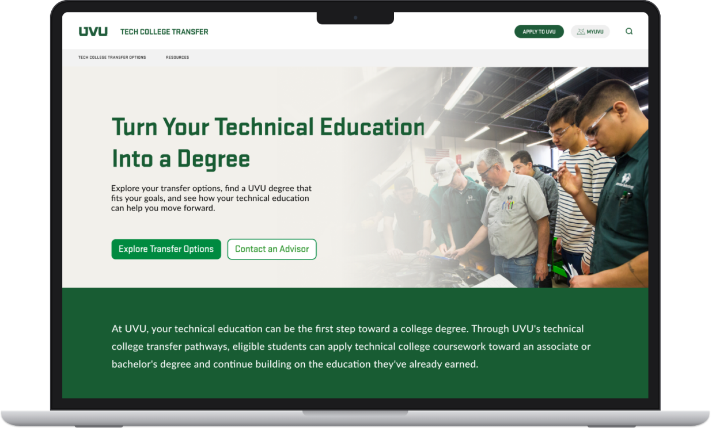
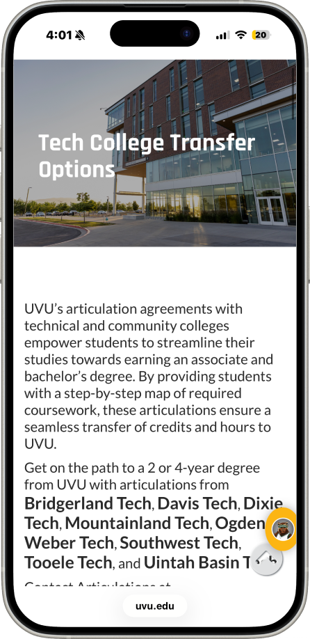
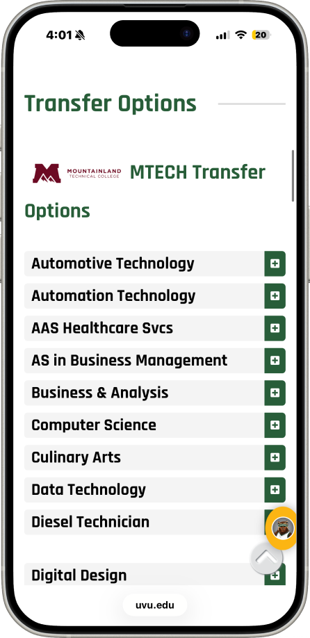
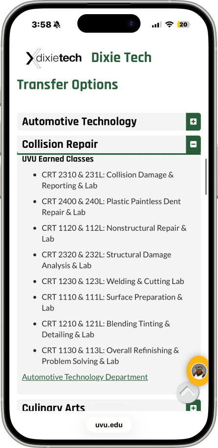

Workforce Alignment
Simplifying how technical college students understand their transfer credits and pathways to UVU.

PROBLEM
Transfer information existed, but it was buried in long, college-by-college lists full of unfamiliar terms.
WHAT I DID
Audited the existing site, interviewed 8 potential students, and redesigned the page into a guided finder that shows only the credits and degrees that apply to each student.
OUTCOME
Presented to UVU stakeholders on September 24, 2026, and now in development.
Project Overview
UVU's transfer page had the right information, but students had a hard time taking action.
UVU's Tech College Transfer website helps students understand how education from a Utah technical college can apply toward a degree at UVU. But the process involves a lot of information: colleges, programs, credits, course equivalents, and degree options. That makes it easy for students to lose track of what applies to them.
The Problem
Too much scrolling, too many unfamiliar terms, and no clear next step.
- Navigation
- Students had to work through multiple pieces of information before understanding which transfer pathway applied to them.
- Clarity
- Transfer credits, UVU degree options, and course information needed to be easier to scan and understand.
- Next steps
- Even after finding relevant information, the experience needed a clearer way to guide students toward what to do next.
What the website currently looks like



Discovery
First, I went through the site as if I were a transfer student.
I started by reviewing the existing Tech College Transfer experience from a student's perspective. I looked at how information was organized, how students moved between colleges and programs, whether important transfer information was easy to understand, and what action the site encouraged them to take next.
3 focus areas
- Finding a pathway
- Could a student quickly identify their technical college and find the program that applied to them?
- Understanding information
- Once they found their program, was it clear what credits transferred and how those credits connected to UVU?
- Knowing what comes next
- After reviewing their transfer information, did students have an obvious next step?
The audit gave me a few early pain points, but those were still based on my own assumptions. Before making design decisions, I wanted to see whether real users were experiencing the same problems.
User Interviews
Were students actually getting stuck where I thought they were?
Rather than designing around my own assumptions, I interviewed 8 potential users to see where their experience matched what I'd noticed, and where it didn't.
What I expected
The page felt like a lot to take in at once. There was a large amount of scrolling, long sections of text, and transfer terminology that wasn't always easy to understand. Even after finding the relevant information, I was still unsure what a student was supposed to do next.
What users told me
The interviews confirmed many of those concerns. Users also felt there was too much scrolling, had trouble understanding what the information meant, and weren't always sure where the experience was leading them.
What this told me
The solution wasn't just to shorten the page. The information needed to be broken into smaller, more intentional steps. Instead of showing everything at once, the experience could guide students through a series of choices, showing them only the information relevant to their college, program, and transfer path. It also needed to make the next step much more obvious once they reached their results.
One thing I didn't expect was that users actually wanted more opportunities to click and make choices. They felt it would be easier to navigate if they could select what applied to them instead of scrolling through everything on one page.